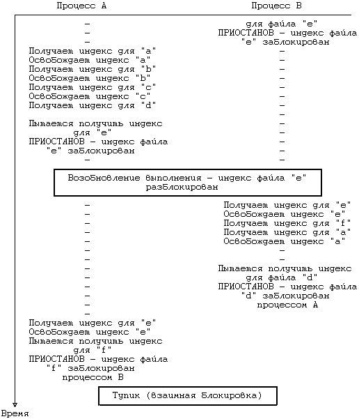
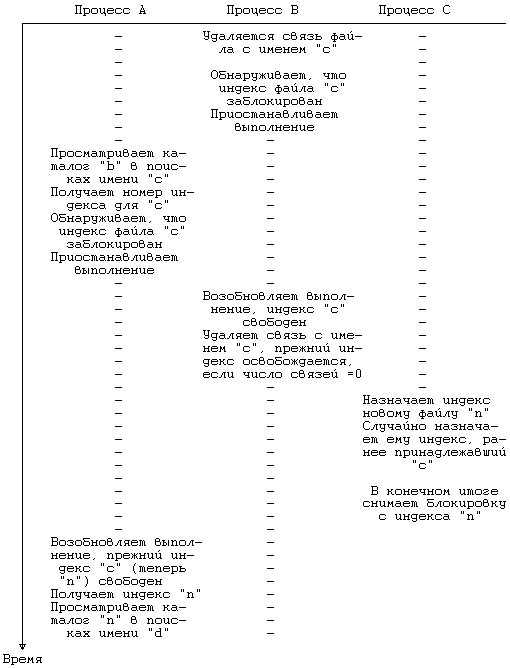

Системная функция unlink удаляет из каталога точку входа для файла. Синтаксис вызова функции unlink:
unlink(pathname);
где pathname указывает имя файла, удаляемое из иерархии каталогов. Если процесс разрывает данную связь файла с каталогом при помощи функции unlink, по указанному в вызове функции имени файл не будет доступен, пока в каталоге не создана еще одна запись с этим именем. Например, при выполнении следующего фрагмента программы:
unlink("myfile");
fd = open("myfile",O_RDONLY);
функция open завершится неудачно, поскольку к моменту ее выполнения в текущем каталоге больше не будет файла с именем myfile. Если удаляемое имя является последней связью файла с каталогом, ядро в итоге освобождает все информационные блоки файла. Однако, если у файла было несколько связей, он остается все еще доступным под другими именами.

Рисунок 5.30. Взаимная блокировка процессов при выполнении функции link
На Рисунке 5.31 представлен алгоритм функции unlink. Сначала для поиска файла с удаляемой связью ядро использует модификацию алгоритма namei, которая вместо индекса файла возвращает индекс родительского каталога. Ядро обращается к индексу файла в памяти, используя алгоритм iget. (Особый случай, связанный с удалением имени файла ".", будет рассмотрен в упражнении). После проверки отсутствия ошибок и (для исполняемых файлов) удаления из таблицы областей записей с неактивным разделяемым текстом (глава 7) ядро стирает имя файла из родительского каталога: сделать значение номера индекса равным 0 достаточно для очистки места, занимаемого именем файла в каталоге. Затем ядро производит синхронную запись каталога на диск, гарантируя тем самым, что под своим прежним именем файл уже не будет доступен, уменьшает значение счетчика связей и с помощью алгоритма iput освобождает в памяти индексы родительского каталога и файла с удаляемой связью.
При освобождении в памяти по алгоритму iput индекса файла с удаляемой связью, если значения счетчика ссылок и счетчика связей становятся равными 0, ядро забирает у файла обратно дисковые блоки, которые он занимал. На этот индекс больше не указывает ни одно из файловых имен и индекс неактивен. Для того, чтобы забрать дисковые блоки, ядро в цикле просматривает таблицу содержимого индекса, освобождая все блоки прямой адресации немедленно (в соответствии с алгоритмом free). Что касается блоков косвенной адресации, ядро освобождает все блоки, появляющиеся на различных уровнях косвенности, рекурсивно, причем в первую очередь освобождаются блоки с меньшим уровнем. Оно обнуляет номера блоков в таблице содержимого индекса и устанавливает размер файла в индексе равным 0. Затем ядро очищает в индексе поле типа файла, указывая тем самым, что индекс свободен, и освобождает индекс по алгоритму ifree. Ядро делает необходимую коррекцию на диске, так как дисковая копия индекса все еще указывает на то, что индекс используется; теперь индекс свободен для назначения другим файлам.
алгоритм unlink
входная информация: имя файла
выходная информация: отсутствует
{
получить родительский индекс для файла с удаляемой
связью (алгоритм namei);
/* если в качестве файла выступает текущий каталог... */
если (последней компонентой имени файла является ".")
увеличить значение счетчика ссылок в индексе;
в противном случае
получить индекс для файла с удаляемой связью (алго-
ритм iget);
если (файл является каталогом, но пользователь не явля-
ется суперпользователем)
{
освободить индексы (алгоритм iput);
возвратить (ошибку);
}
если (файл имеет разделяемый текст и текущее значение
счетчика связей равно 1)
удалить записи из таблицы областей;
в родительском каталоге: обнулить номер индекса для уда-
ляемой связи;
освободить индекс родительского каталога (алгоритм
iput);
уменьшить число связей файла;
освободить индекс файла (алгоритм iput);
/* iput проверяет, равно ли число связей 0, если
* да,
* освобождает блоки файла (алгоритм free) и
* освобождает индекс (алгоритм ifree);
*/
}
|
Рисунок 5.31. Алгоритм удаления связи файла с каталогом
Ядро посылает свои записи на диск для того, чтобы свести к минимуму опасность искажения файловой системы в случае системного сбоя. Например, когда ядро удаляет имя файла из родительского каталога, оно синхронно переписывает каталог на диск - перед тем, как уничтожить содержимое файла и освободить его индекс. Если система дала сбой до того, как произошло удаление содержимого файла, ущерб файловой системе будет нанесен минимальный: один из индексов будет иметь число связей, на 1 превышающее число записей в каталоге, которые ссылаются на этот индекс, но все остальные имена путей поиска файла останутся допустимыми. Если запись на диск не была сделана синхронно, точка входа в каталог на диске после системного сбоя может указывать на свободный (или переназначенный) индекс. Таким образом, число записей в каталоге на диске, которые ссылаются на индекс, превысило бы значение счетчика ссылок в индексе. В частности, если имя файла было именем последней связи файла, это имя указывало бы на не назначенный индекс. Не вызывает сомнения, что в первом случае ущерб, наносимый системе, менее серьезен и легко устраним (см. раздел 5.18).
Предположим, например, что у файла есть две связи с именами "a" и "b", одна из которых - "a" - разрывается процессом с помощью функции unlink. Если ядро записывает на диске результаты всех своих действий, то оно, очищая точку входа в каталог для файла "a", делает то же самое на диске. Если система дала сбой после завершения записи результатов на диск, число связей у файла "b" будет равно 2, но файл "a" уже не будет существовать, поскольку прежняя запись о нем была очищена перед сбоем системы. Файл "b", таким образом, будет иметь лишнюю связь, но после перезагрузки число связей переустановится и система будет работать надлежащим образом.
Теперь предположим, что ядро записывало на диск результаты своих действий в обратном порядке и система дала сбой: то есть, ядро уменьшило значение счетчика связей для файла "b", сделав его равным 1, записало индекс на диск и дало сбой перед тем, как очистить в каталоге точку входа для файла "a". После перезагрузки системы записи о файлах "a" и "b" в соответствующих каталогах будут существовать, но счетчик связей у того файла, на который они указывают, будет иметь значение 1. Если затем процесс запустит функцию unlink для файла "a", значение счетчика связей станет равным 0, несмотря на то, что файл "b" ссылается на тот же индекс. Если позднее ядро переназначит индекс в результате выполнения функции creat, счетчик связей для нового файла будет иметь значение, равное 1, но на файл будут ссылаться два имени пути поиска. Система не может выправить ситуацию, не прибегая к помощи программ сопровождения (fsck, описанной в разделе 5.18), обращающихся к файловой системе через блочный или строковый интерфейс.
Для того, чтобы свести к минимуму опасность искажения файловой системы в случае системного сбоя, ядро освобождает индексы и дисковые блоки также в особом порядке. При удалении содержимого файла и очистке его индекса можно сначала освободить блоки, содержащие данные файла, а можно освободить индекс и заново переписать его. Результат в обоих случаях, как правило, одинаковый, однако, если где-то в середине произойдет системный сбой, они будут различаться. Предположим, что ядро сначала освободило дисковые блоки, принадлежавшие файлу, и дало сбой. После перезагрузки системы индекс все еще содержит ссылки на дисковые блоки, занимаемые файлом прежде и ныне не хранящие относящуюся к файлу информацию. Ядру файл показался бы вполне удовлетворительным, но пользователь при обращении к файлу заметит искажение данных. Эти дисковые блоки к тому же могут быть переназначены другим файлам. Чтобы очистить файловую систему программой fsck, потребовались бы большие усилия. Однако, если система сначала переписала индекс на диск, а потом дала сбой, пользователь не заметит каких-либо искажений в файловой системе после перезагрузки. Информационные блоки, ранее принадлежавшие файлу, станут недоступны для системы, но каких-нибудь явных изменений при этом пользователи не увидят. Программе fsck так же было бы проще забрать назад освободившиеся после удаления связи дисковые блоки, нежели производить очистку, необходимую в первом из рассматриваемых случаев.
Поводов для конкуренции при выполнении системной функции unlink очень много, особенно при удалении имен каталогов. Команда rmdir удаляет каталог, убедившись предварительно в том, что в каталоге отсутствуют файлы (она считывает каталог и проверяет значения индексов во всех записях каталога на равенство нулю). Но так как команда rmdir запускается на пользовательском уровне, действия по проверке содержимого каталога и удаления каталога выполняются не так уж просто; система должна переключать контекст между выполнением функций read и unlink. Однако, после того, как команда rmdir обнаружила, что каталог пуст, другой процесс может предпринять попытку создать файл в каталоге функцией creat. Избежать этого пользователи могут только путем использования механизма захвата файла и записи. Тем не менее, раз процесс приступил к выполнению функции unlink, никакой другой процесс не может обратиться к файлу с удаляемой связью, поскольку индексы родительского каталога и файла заблокированы.
Обратимся еще раз к алгоритму функции link и посмотрим, каким образом система снимает с индекса блокировку до завершения выполнения функции. Если бы другой процесс удалил связь файла пока его индекс свободен, он бы тем самым только уменьшил значение счетчика связей; так как значение счетчика связей было увеличено перед удалением связи, это значение останется положительным. Следовательно, файл не может быть удален и система работает надежно. Эта ситуация аналогична той, когда функция unlink вызывается сразу после завершения выполнения функции link.
Другой повод для конкуренции имеет место в том случае, когда один процесс преобразует имя пути поиска файла в индекс файла по алгоритму namei, а другой процесс удаляет каталог, имя которого входит в путь поиска. Допустим, процесс A делает разбор имени "a/ b/c/d" и приостанавливается во время получения индекса для файла "c". Он может приостановиться при попытке заблокировать индекс или при попытке обратиться к дисковому блоку, где этот индекс хранится (см. алгоритмы iget и bread). Если процессу B нужно удалить связь для каталога с именем "c", он может приостановиться по той же самой причине, что и процесс A. Пусть ядро впоследствии решит возобновить процесс B раньше процесса A. Прежде чем процесс A продолжит свое выполнение, процесс B завершится, удалив связь каталога "c" и его содержимое по этой связи. Позднее, процесс A попытается обратиться к несуществующему индексу, который уже был удален. Алгоритм namei, проверяющий в первую очередь неравенство значения счетчика связей нулю, сообщит об ошибке.
Такой проверки, однако, не всегда достаточно, поскольку можно предположить, что какой-нибудь другой процесс создаст в любом месте файловой системы новый каталог и получит тот индекс, который ранее использовался для "c". Процесс A будет заблуждаться, думая, что он обратился к нужному индексу (см. Рисунок 5.32). Как бы то ни было, система сохраняет свою целостность; самое худшее, что может произойти, это обращение не к тому файлу - с возможным нарушением защиты - но соперничества такого рода на практике довольно редки.

Рисунок 5.32. Соперничество процессов за индекс при выполнении функции unlink
#include <sys/types.h>
#include <sys/stat.h>
#include <fcntl.h>
main(argc,argv)
int argc;
char *argv[];
{
int fd;
char buf[1024];
struct stat statbuf;
if (argc != 2) /* нужен параметр */
exit();
fd = open(argv[1],O_RDONLY);
if (fd == -1) /* open завершилась
неудачно */
exit();
if (unlink(argv[1]) == -1) /* удалить связь с только
что открытым файлом */
exit();
if (stat(argv[1],&statbuf) == -1) /* узнать состоя-
ние файла по имени */
printf("stat %s завершилась неудачно\n",argv[1]);
/* как и следовало бы */
else
printf("stat %s завершилась успешно!\n",argv[1]);
if (fstat(fd,&statbuf) == -1) /* узнать состояние
файла по идентификатору */
printf("fstat %s сработала неудачно!\n",argv[1]);
else
printf("fstat %s завершилась успешно\n",argv[1]);
/* как и следовало бы */
while (read(fd,buf,sizeof(buf)) > 0) /* чтение откры-
того файла с удаленной связью */
printf("%1024s",buf); /* вывод на печать поля
размером 1 Кбайт */
}
|
Рисунок 5.33. Удаление связи с открытым файлом
Процесс может удалить связь файла в то время, как другому процессу нужно, чтобы файл оставался открытым. (Даже процесс, удаляющий связь, может быть процессом, выполнившим это открытие). Поскольку ядро снимает с индекса блокировку по окончании выполнения функции open, функция unlink завершится успешно. Ядро будет выполнять алгоритм unlink точно так же, как если бы файл не был открыт, и удалит из каталога запись о файле. Теперь по имени удаленной связи к файлу не сможет обратиться никакой другой процесс. Однако, так как системная функция open увеличила значение счетчика ссылок в индексе, ядро не очищает содержимое файла при выполнении алгоритма iput перед завершением функции unlink. Поэтому процесс, открывший файл, может производить над файлом все обычные действия по его дескриптору, включая чтение из файла и запись в файл. Но когда процесс закрывает файл, значение счетчика ссылок в алгоритме iput становится равным 0, и ядро очищает содержимое файла. Короче говоря, процесс, открывший файл, продолжает работу так, как если бы функция unlink не выполнялась, а unlink, в свою очередь, работает так, как если бы файл не был открыт. Другие системные функции также могут продолжать выполняться в процессе, открывшем файл.
В приведенном на Рисунке 5.33 примере процесс открывает файл, указанный в качестве параметра, и затем удаляет связь только что открытого файла. Функция stat завершится неудачно, поскольку первоначальное имя после unlink больше не указывает на файл (предполагается, что тем временем никакой другой процесс не создал файл с тем же именем), но функция fstat завершится успешно, так как она выбирает индекс по дескриптору файла. Процесс выполняет цикл, считывая на каждом шаге по 1024 байта и пересылая файл в стандартный вывод. Когда при чтении будет обнаружен конец файла, процесс завершает работу: после завершения процесса файл перестает существовать. Процессы часто создают временные файлы и сразу же удаляют связь с ними; они могут продолжать ввод-вывод в эти файлы, но имена файлов больше не появляются в иерархии каталогов. Если процесс по какой-либо причине завершается аварийно, он не оставляет от временных файлов никакого следа.
Предыдущая глава || Оглавление || Следующая глава